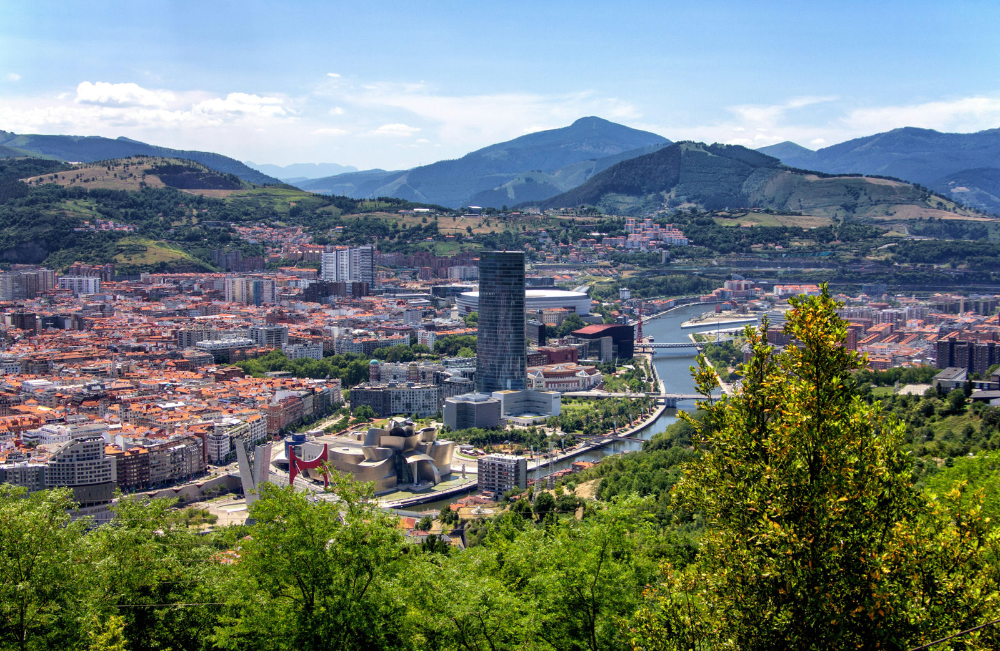
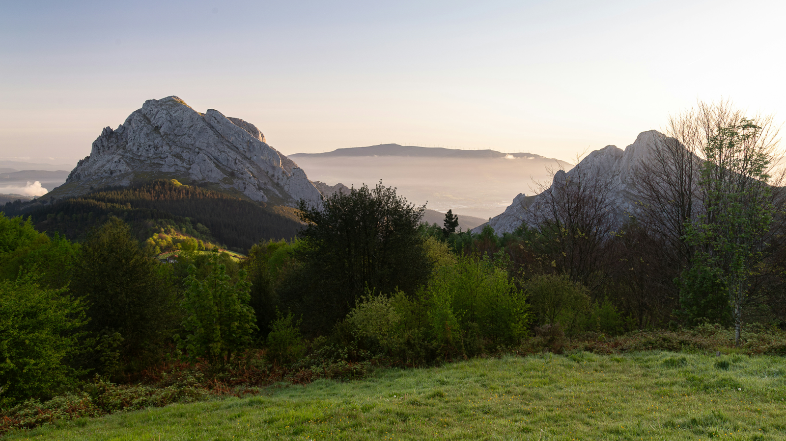
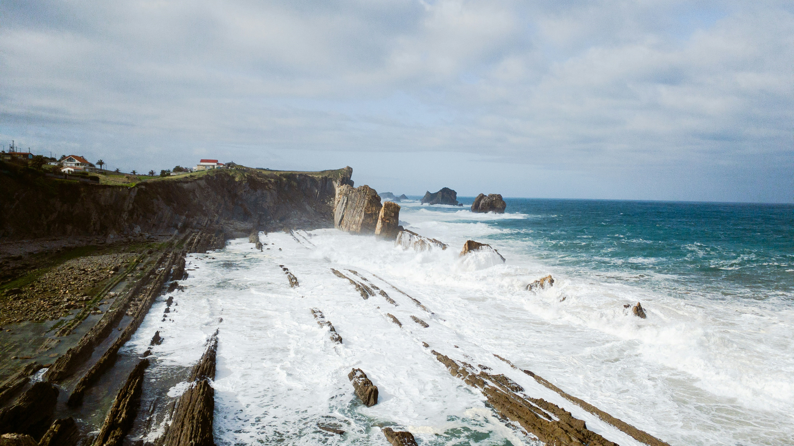
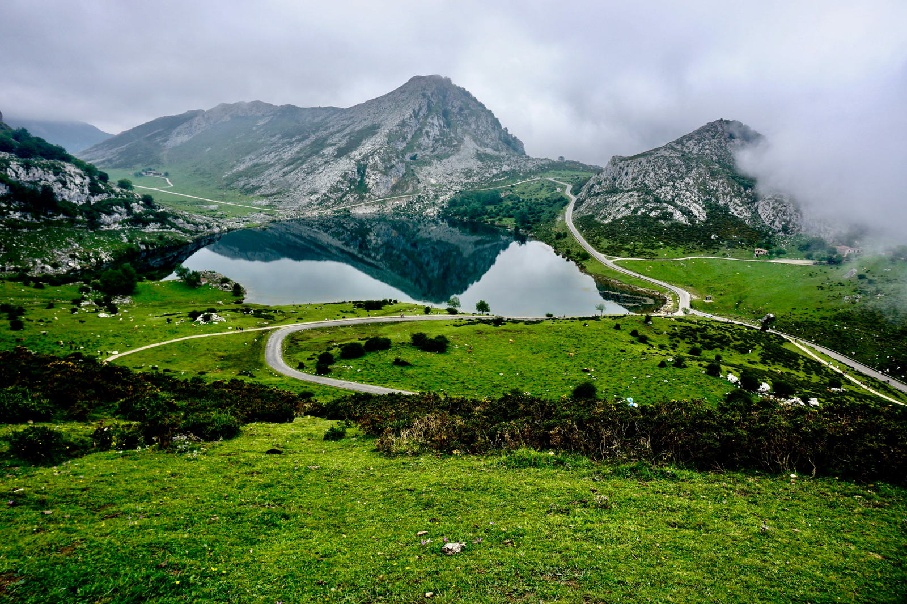
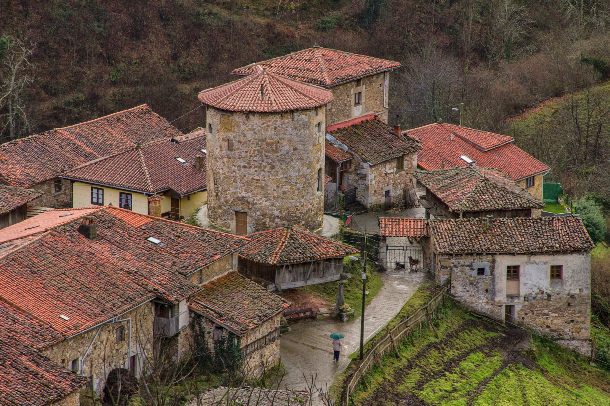
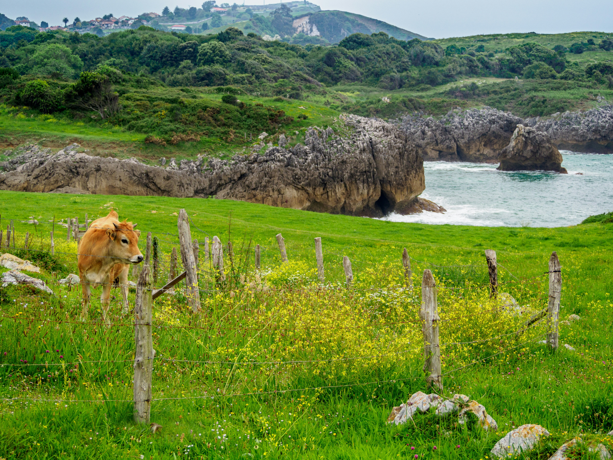
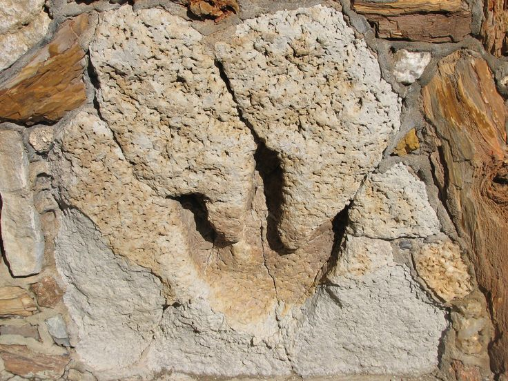
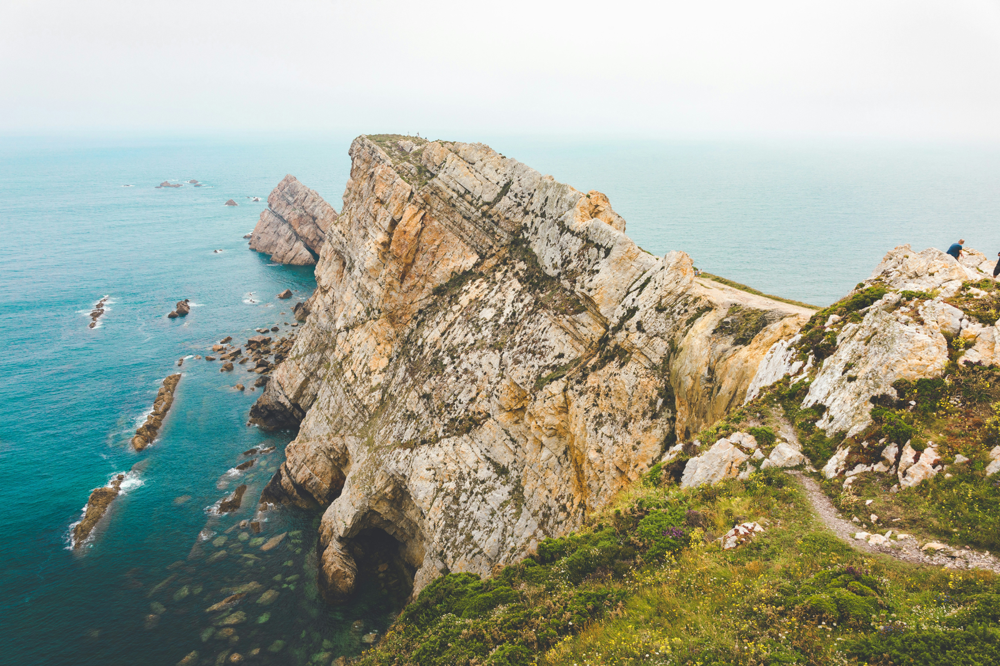

01
Si parte da Bilbao
Una prima giornata urbana tra il Casco Viejo, il Nervión e l'architettura contemporanea. Poi si lascia la città e comincia davvero il viaggio verso la costa.
Paesi BaschiDall'Atlantico ai Picos de Europa, seguendo una Spagna più verde e selvaggia.
Scogliere sull'Atlantico, villaggi di pietra, montagne che sembrano comparire all'improvviso e una costa dove sono rimaste perfino le tracce dei dinosauri.
Questo viaggio attraversa il nord della Spagna senza correre da una città all'altra: il bello è proprio ciò che succede nel mezzo.
✦ Auto consigliata · percorso pensato con arrivo a Bilbao e partenza dalle AsturieTre punti utili da cui partire per escursioni, visite ed esperienze lungo il percorso.

Una prima giornata urbana tra il Casco Viejo, il Nervión e l'architettura contemporanea. Poi si lascia la città e comincia davvero il viaggio verso la costa.
Paesi Baschi
Tra Gaztelugatxe e Urdaibai il paesaggio diventa il protagonista: mare, piccoli porti, boschi e strade che invitano continuamente a deviare dal percorso principale.
Urdaibai · Atlantico
Si continua verso ovest seguendo una costa frastagliata, alternando borghi, spiagge e punti panoramici. È una parte del viaggio in cui vale la pena lasciare spazio alle deviazioni.
Cantabria
In poche ore il mare lascia posto alle montagne. Potes e l'area dei Picos segnano il cambio di scenario più netto dell'intero itinerario: qui il viaggio rallenta.
Picos de Europa
Il passaggio verso le Asturie porta tra valli profonde e piccoli centri di montagna. Alcuni luoghi richiedono un po' più di organizzazione, ed è proprio qui che si nascondono alcune delle tappe più belle.
Montagna · Asturie
Spiagge nascoste nell'entroterra, scogliere e fenomeni naturali creati dall'incontro tra il mare e la roccia calcarea: la costa orientale asturiana è tutto tranne che monotona.
Asturie · Natura
Lungo la costa asturiana si possono osservare vere impronte fossilizzate lasciate dai dinosauri milioni di anni fa. La cosiddetta Costa dei Dinosauri attraversa proprio questa parte del nostro percorso.
Nel viaggio completo scegliamo dove fermarci e come inserire la deviazione senza trasformarla in una tappa frettolosa.
Il percorso completo resta nel viaggio personalizzato, ma queste danno già un'idea del Nord che vogliamo raccontare.
Una costa verde dove boschi, estuari e piccoli paesi si incontrano a pochi chilometri di distanza.
Il momento in cui il road trip lascia l'Atlantico e si infila tra pareti di roccia e vallate.

Fari, scogliere e vento: l'ultima parte del viaggio continua verso ovest senza dover tornare sui propri passi.
La struttura è semplice; sono le deviazioni a renderla speciale.
L'auto è la scelta consigliata per seguire l'itinerario completo. Bilbao può essere visitata senza auto, ritirandola solo quando si lascia la città.
Bilbao, Santander, Oviedo e Gijón sono collegabili con treni e autobus. Per un viaggio senza auto costruirei però una variante dedicata, adattando le tappe naturalistiche più isolate.
Il percorso è pensato in modo lineare: arrivo a Bilbao e partenza dall'aeroporto delle Asturie, così non serve rifare centinaia di chilometri per tornare al punto iniziale.
Bilbao → costa basca → Cantabria → Picos de Europa → costa asturiana → Asturias Airport
Partiamo dai tuoi giorni, dai voli e dal modo in cui preferisci viaggiare. Poi costruiamo il percorso, scegliendo quali deviazioni meritano davvero di entrare nel tuo itinerario.
Costruiamo il tuo viaggio ✦